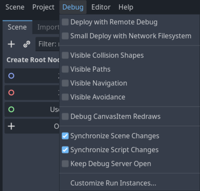

Tổng quan về các công cụ gỡ lỗi
Hướng dẫn này giới thiệu tổng quan về các công cụ gỡ lỗi có sẵn trong engine.
Godot đi kèm một debugger và các profiler mạnh mẽ để truy tìm lỗi, kiểm tra game lúc đang chạy, theo dõi các chỉ số quan trọng và đo hiệu năng. Godot cũng cung cấp tùy chọn để hiển thị trực quan các hộp va chạm và đa giác điều hướng trong game đang chạy.
Cuối cùng, bạn có các tùy chọn để gỡ lỗi game chạy trên thiết bị từ xa và tải lại các thay đổi đối với scene hoặc code trong khi game đang chạy.
Bảng Output
Bảng output cho phép bạn xem văn bản do dự án in ra, và cả do trình chỉnh sửa in ra (ví dụ từ các script @tool). Bạn có thể tìm thông tin về nó trong Bảng Output.
Bảng Debugger
Nhiều công cụ gỡ lỗi của Godot là một phần của bảng Debugger; bạn có thể tìm thông tin về nó trong Bảng Debugger.
Các tùy chọn trong menu Debug
Có một số tùy chọn gỡ lỗi thông dụng bạn có thể bật hoặc tắt khi chạy game trong trình chỉnh sửa, giúp ích cho việc gỡ lỗi game.
Bạn có thể tìm các tùy chọn này trong menu Debug của trình chỉnh sửa.

Dưới đây là mô tả các tùy chọn:
Deploy with Remote Debug
Khi bật tùy chọn này, việc dùng one-click deploy sẽ khiến tệp thực thi cố gắng kết nối đến IP của máy tính này để có thể gỡ lỗi dự án đang chạy. Tùy chọn này dành cho gỡ lỗi từ xa (thường với thiết bị di động). Bạn không cần bật nó để dùng debugger GDScript trên máy cục bộ.
Small Deploy with Network Filesystem
Tùy chọn này giúp tăng tốc việc kiểm thử các game có dung lượng lớn trên thiết bị từ xa.
Khi bật Small Deploy with Network Filesystem, thay vì xuất toàn bộ game, việc triển khai sẽ build một tệp thực thi tối giản. Sau đó trình chỉnh sửa cung cấp các tệp của dự án qua mạng.
Ngoài ra, trên Android, game được triển khai qua cáp USB để tăng tốc quá trình triển khai.
Visible Collision Shapes
Khi bật tùy chọn này, các collision shape và node raycast (cho 2D và 3D) sẽ hiển thị trong dự án đang chạy.
Visible Paths
Khi bật tùy chọn này, các resource curve được dùng bởi các node path sẽ hiển thị trong dự án đang chạy.
Visible Avoidance
Khi bật tùy chọn này, hình dạng, bán kính và vận tốc của các đối tượng avoidance sẽ hiển thị trong dự án đang chạy.
Debug CanvasItem Redraws
Khi bật tùy chọn này, các yêu cầu vẽ lại của đối tượng 2D sẽ hiển thị (dưới dạng một chớp sáng ngắn) trong dự án đang chạy. Điều này hữu ích để xử lý sự cố với low processor mode.
Synchronize Scene Changes
Khi bật tùy chọn này, mọi thay đổi đối với scene trong trình chỉnh sửa sẽ được sao chép sang dự án đang chạy. Khi dùng từ xa trên thiết bị, tùy chọn này hiệu quả hơn nếu bật tùy chọn network filesystem.
Synchronize Script Changes
Khi bật tùy chọn này, mọi thay đổi đối với script trong trình chỉnh sửa sẽ được tải lại trong dự án đang chạy. Khi dùng từ xa trên thiết bị, tùy chọn này hiệu quả hơn khi dùng network filesystem.
Keep Debug Server Open
Khi bật tùy chọn này, debug server của trình chỉnh sửa sẽ luôn mở và lắng nghe các phiên mới được khởi chạy bên ngoài trình chỉnh sửa.
Customize Run Instances...
Tùy chọn này mở một hộp thoại cho phép bạn yêu cầu Godot chạy nhiều instance của game cùng lúc, và chỉ định đối số dòng lệnh cho từng instance. Điều này đặc biệt hữu ích khi xây dựng và gỡ lỗi game nhiều người chơi.

Enable Multiple Instances
Khi bật tùy chọn này, trình chỉnh sửa sẽ chạy nhiều instance của dự án cùng lúc khi bạn Run Project.
Bên dưới ô đánh dấu này là bộ chọn số instance cần chạy.
Đánh dấu ô này và đặt giá trị là 1 cũng giống như hoàn toàn không đánh dấu ô này.
Main Run Args
Đây là các đối số sẽ được truyền cho mọi instance của dự án khi bạn Run Project, trừ khi bạn chọn "Enabled" trong "Override Main Run Args" cho một instance cụ thể.
Lưu ý rằng các đối số này được phân tách bằng dấu cách.
Mẹo
Bạn có thể truy cập các đối số này trong script bằng get_cmdline_args.
Cảnh báo
Kể cả khi bạn bỏ chọn "Enable Multiple Instances", các đối số này vẫn được truyền khi bạn Run Project.
Override Main Run Args
Khi bật tùy chọn này, các đối số trong trường "Main Run Args" sẽ không được truyền cho instance cụ thể này của dự án khi bạn Run Project.
Launch Arguments
Đây là các đối số sẽ được truyền cho instance cụ thể này của dự án khi bạn Run Project. Chúng sẽ được kết hợp với "Main Run Args" trừ khi bạn chọn "Enabled" trong "Override Main Run Args".
Các công cụ và tùy chọn gỡ lỗi của trình chỉnh sửa script
Trình chỉnh sửa script có bộ công cụ gỡ lỗi riêng để dùng với breakpoint và hai tùy chọn. Các công cụ breakpoint cũng có trong tab Debugger của debugger.
Mẹo
Bạn có thể tạo breakpoint bằng cách nhấp vào lề bên trái của trình chỉnh sửa script (bên trái số dòng). Khi rê chuột lên lề này, bạn sẽ thấy một chấm đỏ trong suốt xuất hiện, và nó trở thành chấm đỏ đậm sau khi bạn nhấp để đặt breakpoint. Nhấp lại vào chấm đỏ để xóa breakpoint. Breakpoint tạo theo cách này được giữ lại qua các lần khởi động lại trình chỉnh sửa, kể cả khi script chưa được lưu lúc thoát.
Bạn cũng có thể dùng từ khóa breakpoint trong GDScript để tạo breakpoint được lưu ngay trong script. Khác với breakpoint tạo bằng cách nhấp vào lề, breakpoint dựa trên từ khóa này được giữ nguyên trên các máy khác nhau khi dùng hệ thống quản lý phiên bản.

Nút Break khiến script dừng lại giống như một breakpoint. Continue cho game tiếp tục chạy sau khi tạm dừng tại breakpoint. Step Over đi đến dòng code tiếp theo, còn Step Into đi vào bên trong hàm nếu có thể. Nếu không, nó hoạt động giống Step Over.
Tùy chọn Debug with External Editor cho phép bạn gỡ lỗi game bằng trình soạn thảo bên ngoài. Bạn có thể đặt phím tắt cho nó trong Editor Settings > Shortcuts > Debugger.
Khi debugger dừng tại một breakpoint, một mũi tên tam giác màu xanh lá sẽ hiện ở lề (gutter) của trình chỉnh sửa script. Mũi tên này cho biết dòng code mà debugger đã dừng.
Cài đặt dự án cho gỡ lỗi
Trong cài đặt dự án có một hạng mục Debug với các hạng mục con điều khiển những thứ khác nhau. Hãy bật Advanced Settings để thay đổi các cài đặt này.
Cài đặt
Đây là một số cài đặt chung, như in FPS hiện tại ra bảng Output, số hàm tối đa khi profiling, v.v.
File Logging
Các cài đặt này cho phép bạn ghi output của console và thông báo lỗi vào tệp.
GDScript
Các cài đặt này cho phép bạn bật/tắt các cảnh báo GDScript cụ thể, chẳng hạn cảnh báo biến không được sử dụng. Bạn cũng có thể tắt hoàn toàn các cảnh báo. Xem Hệ thống cảnh báo của GDScript để biết thêm thông tin.
Shader Language
Các cài đặt này cho phép bạn bật/tắt các cảnh báo shader cụ thể, chẳng hạn cảnh báo biến không được sử dụng. Bạn cũng có thể tắt hoàn toàn các cảnh báo.
Canvas Items
Các cài đặt này dùng để gỡ lỗi việc vẽ lại canvas item.
Shapes
Shapes là nơi bạn có thể điều chỉnh màu của các hình dạng chỉ xuất hiện cho mục đích gỡ lỗi, chẳng hạn hình dạng va chạm và điều hướng.
Remote trong Scene dock
Khi chạy game trong trình chỉnh sửa, hai tùy chọn sẽ xuất hiện ở đầu dock Scene: Remote và Local. Khi dùng Remote, bạn có thể kiểm tra hoặc thay đổi tham số của các node trong dự án đang chạy.

Ghi chú
Một số cài đặt trình chỉnh sửa liên quan đến gỡ lỗi nằm trong Editor Settings, ở các mục Network > Debug và Debugger.